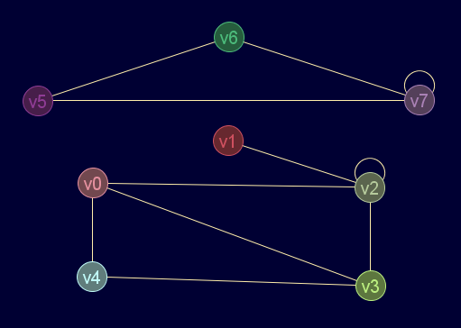

Descripción
Aplica el algoritmo de Floyd-Warshall para obtener la matriz de distancias y/o caminos
Cadena de entrada
gr_floydwar
Cadena de salida
GRAFO.floydwar
Uso
gr_floydwar(<grafo>[,<retorno>])
| Parámetros | |||
|---|---|---|---|
| # | Parámetro | Descripción | Valor por defecto |
| 1 | grafo | Diccionario válido de grafo | |
| 2 | retorno |
|
1 |
Ejemplos
gr_nuevo([[0,0,1,1,1,0,0,0],[0,0,1,0,0,0,0,0],[1,1,1,1,0,0,0,0],[1,0,1,0,1,0,0,0],[1,0,0,1,0,0,0,0],[0,0,0,0,0,0,2,1],[0,0,0,0,0,2,0,1],[0,0,0,0,0,1,1,1]],false,false,true,true)
Salida en JMEScriptGUI con visor de grafos v0.1:

gr_floydwar(gr_nuevo([[0,0,1,1,1,0,0,0],[0,0,1,0,0,0,0,0],[1,1,1,1,0,0,0,0],[1,0,1,0,1,0,0,0],[1,0,0,1,0,0,0,0],[0,0,0,0,0,0,2,1],[0,0,0,0,0,2,0,1],[0,0,0,0,0,1,1,1]],false,false,true,true))
VectorEvaluado: | 0 2 1 1 1 Infinity Infinity Infinity | | 2 0 1 2 3 Infinity Infinity Infinity | | 1 1 0 1 2 Infinity Infinity Infinity | | 1 2 1 0 1 Infinity Infinity Infinity | | 1 3 2 1 0 Infinity Infinity Infinity | | Infinity Infinity Infinity Infinity Infinity 0 1 1 | | Infinity Infinity Infinity Infinity Infinity 1 0 1 | | Infinity Infinity Infinity Infinity Infinity 1 1 0 |
Matriz de distancias y caminos, si el grafo no es ponderado, los arcos pesan 1:gr_floydwar(gr_nuevo([[0,0,1,1,1,0,0,0],[0,0,1,0,0,0,0,0],[1,1,1,1,0,0,0,0],[1,0,1,0,1,0,0,0],[1,0,0,1,0,0,0,0],[0,0,0,0,0,0,2,1],[0,0,0,0,0,2,0,1],[0,0,0,0,0,1,1,1]],false,false,true,true),0)
VectorEvaluado: | [0,2,1,1,1,Infinity,Infinity,Infinity] [2,0,1,2,3,Infinity,Infinity,Infinity] [1,1,0,1,2,Infinity,Infinity,Infinity] [1,2,1,0,1,Infinity,Infinity,Infinity] [1,3,2,1,0,Infinity,Infinity,Infinity] [Infinity,Infinity,Infinity,Infinity,Infinity,0,1,1] [Infinity,Infinity,Infinity,Infinity,Infinity,1,0,1] [Infinity,Infinity,Infinity,Infinity,Infinity,1,1,0] | | [0,2,0,0,0,0,0,0] [2,1,1,2,0,1,1,1] [2,2,2,2,0,2,2,2] [3,2,3,3,3,3,3,3] [4,2,0,4,4,4,4,4] [5,5,5,5,5,5,5,5] [6,6,6,6,6,6,6,6] [7,7,7,7,7,7,7,7] |
Véase también…
Desde / Última modificación
v0.6.2.0